Project Pawtect: Creating Safer Communities for Humans and Stray Paws
Sign in here
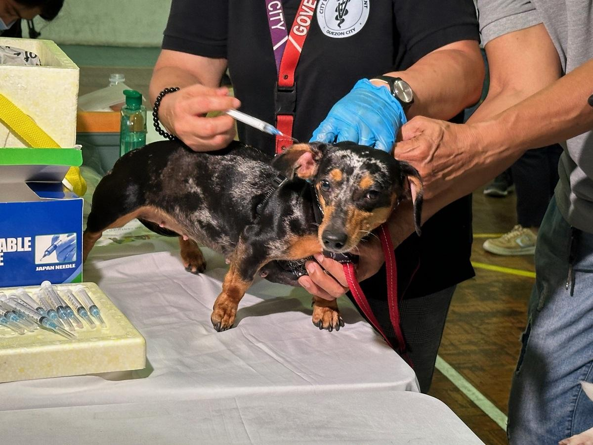
DOH urges caution vs. rabies despite fewer cases in early 2026
By Jiselle Anne C. Casucian, GMA Integrated News, March 7, 2026 The Department of Health (DOH) on Saturday called for vigilance against rabies even though cases have dropped 65% in the first two months of 2026 compared to the same period last year.The agency reported Saturday a total of 17 rabies cases from January 4 to February 21, significantly less than the 49 cases during the same monitoring period in 2025.New cases involved roughly the same number of pets and stray animals, with 13 cases or 76% coming from unvaccinated animals.
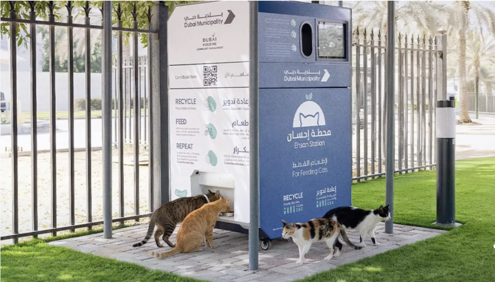
Dubai launches AI-powered ‘Ehsan Stations’ to feed stray animals across emirate
By Leana Bernardo, The Filipino Times, March 9, 2026 Dubai Municipality has unveiled the ‘Ehsan Stations’, the first initiative of its kind in the region, designed to feed stray animals using AI-powered smart devices installed across the emirate. The project reflects Dubai Municipality’s efforts to promote compassion, advance animal welfare, and support environmental sustainability while maintaining the city’s urban landscape.Under the initiative, 12 smart devices will be deployed across key locations, including ten units in public parks and two within facilities operated by Dubai Holding. The stations combine advanced technology with strategic partnerships to manage stray animal populations responsibly, while reducing random feeding practices that can affect public spaces and city aesthetics.
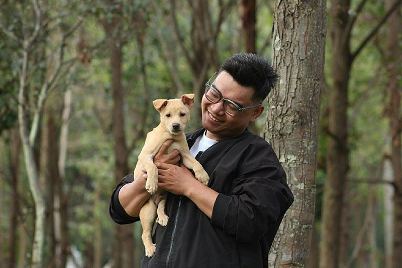
Fur parents, bid goodbye to animal bite worries with Maxicare Prima Animal Bite Care
By Philstar, March 11, 2026 For many Filipino families, a simple animal bite can quickly turn into a stressful and costly medical emergency. In the worst cases, it can even lead to death. Recognizing this everyday risk, Maxicare, the country’s leading HMO, has launched the PRIMA Animal Bite Care e-voucher, the country’s first comprehensive animal bite care with built-in insurance. Recent data from the Department of Health (DOH) show rabies remains a significant concern in the Philippines, with 1,750 fatalities reported between 2020 and 2024. This is particularly timely as the DOH calendar declared March as Rabies Awareness Month.
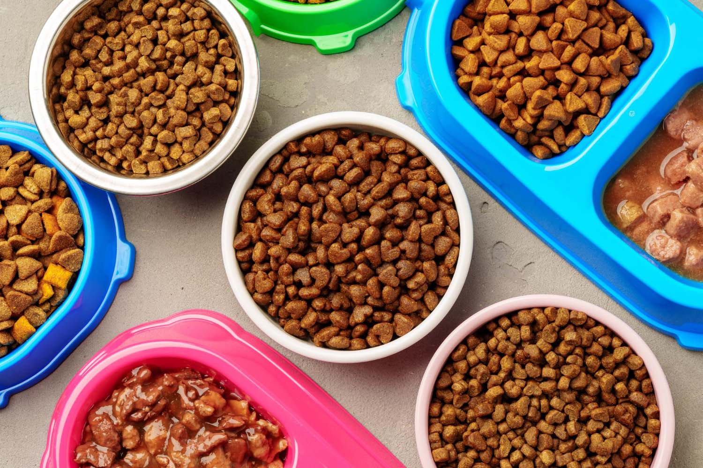
Food / Donation Drives
This initiative provides food and essential supplies for stray dogs and cats across different communities. Donations help purchase pet food, clean water containers, and feeding materials. Volunteers distribute meals to animals who struggle to find food daily. These feeding drives ensure that strays receive proper nutrition and care. Every contribution directly helps reduce hunger among animals living on the streets.
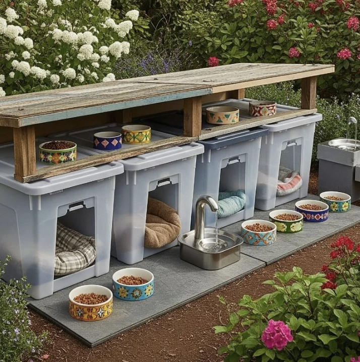
Feeding Stations with Shelters
This project builds safe feeding stations that also function as small shelters for stray animals. Donations fund materials such as roofing, wood panels, and bedding. These stations protect animals from rain, heat, and other harsh conditions. Community volunteers help maintain the stations and refill food and water daily. Supporting this project creates safer spaces for strays to rest and eat.
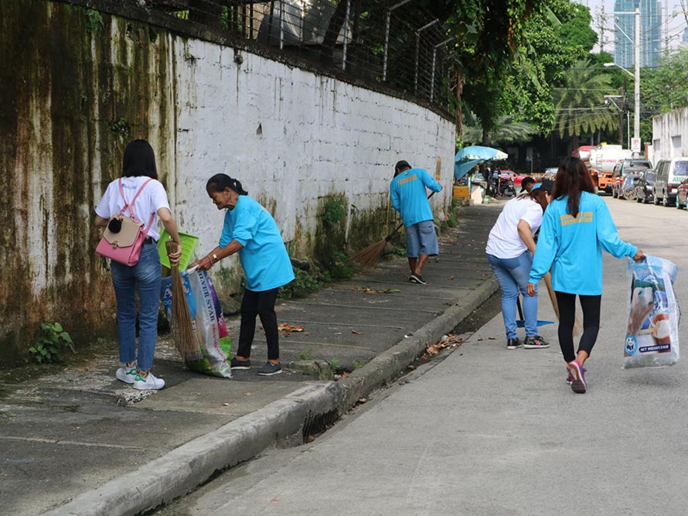
Clean Up Drives
The Clean Up Drives focus on improving the streets of Sampaloc, Manila by cleaning stray animal waste in public areas. Volunteers work together to sanitize sidewalks, parks, and community spaces. The activity promotes a cleaner and healthier environment for both residents and animals. Educational discussions about responsible pet ownership are also conducted. These efforts help build a safer and more respectful community.
Neuter / Spay Cats
This project supports humane population control through spay and neuter programs for stray cats. Veterinarians partner with volunteers to conduct safe procedures and health checks. The program prevents uncontrolled breeding and reduces the number of abandoned kittens. Communities benefit from fewer strays and healthier animal populations. Volunteers can assist with transport, coordination, and recovery care.
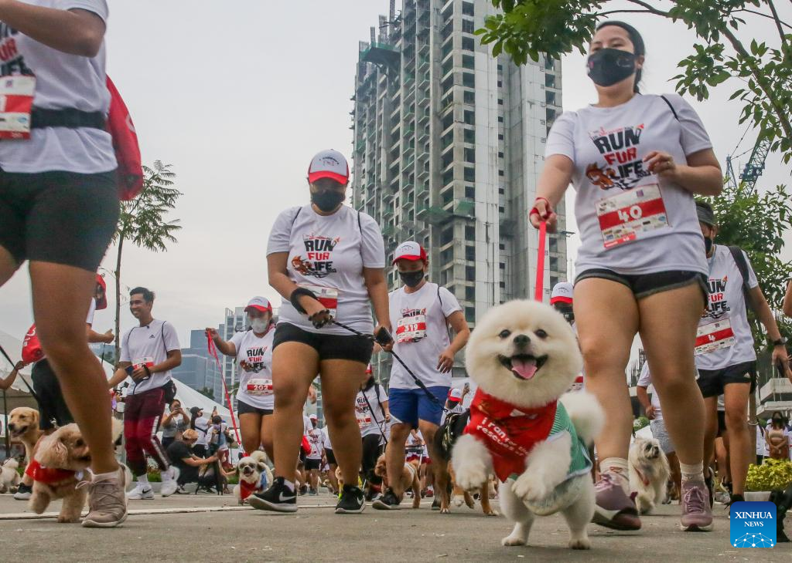
Fun Runs with Rescue Dogs
Community members participate in a friendly fun run while accompanied by rescued shelter dogs. The event promotes exercise, compassion, and awareness for animal welfare. Registration fees help support shelter operations and rescue missions. Families, students, and pet lovers are encouraged to join the activity. The event creates a joyful experience for both humans and animals.
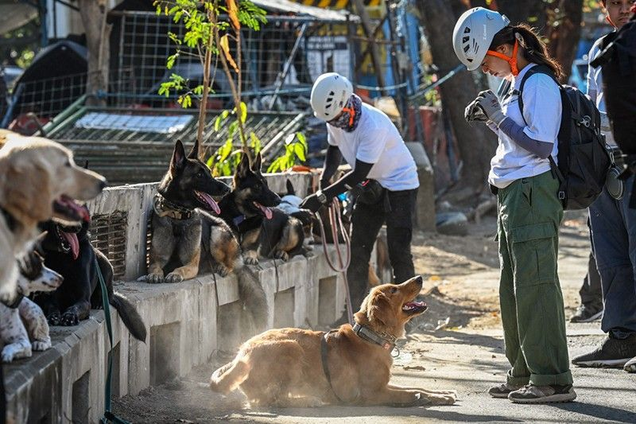
Walking Dogs
Volunteers help walk shelter dogs who need exercise and social interaction. Regular walks improve the dogs' physical health and emotional well-being. It also helps them become more comfortable around people. Volunteers spend meaningful time bonding with animals waiting for adoption. The activity is simple yet greatly improves a dog's quality of life.
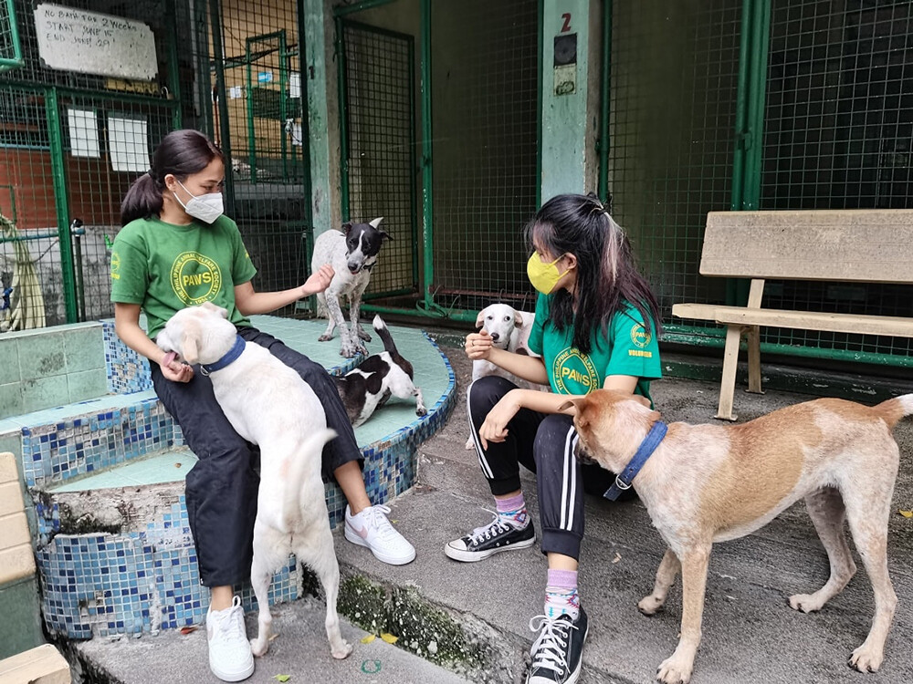
Reading to Dogs
Participants read calm and friendly stories to rescued dogs in shelters. This helps shy or traumatized animals become comfortable around human voices. The peaceful environment reduces anxiety and builds trust. Volunteers enjoy a relaxing activity while helping animals heal emotionally. Over time, the dogs become more confident and adoptable.
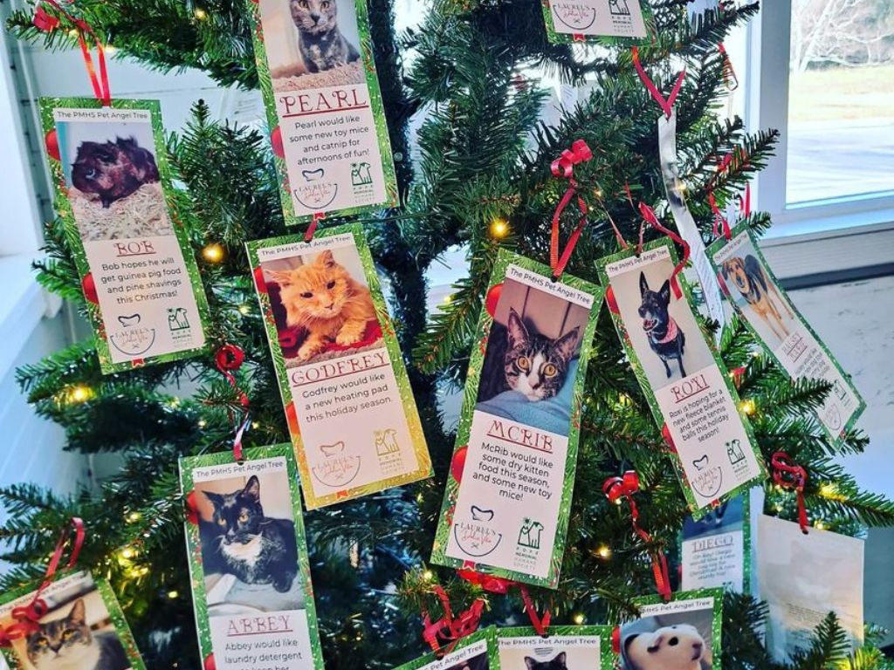
Angel Tree
During Christmas, supporters pick a card from the Angel Tree containing the name of a shelter dog or cat. Each card lists a small wish such as toys, treats, blankets, or food. Donors then provide gifts specifically for that animal. The initiative ensures that every rescued pet receives something special for the holidays. It spreads joy and reminds animals they are loved.
Adoption Processes
Learn about the step‑by‑step process of adopting rescued dogs and cats from our partner shelters. The process includes meeting the animal, completing a short screening, and preparing your home for a new pet. Our team ensures every adoption is responsible and safe. Families receive guidance on pet care and adjustment. This program helps animals find loving and permanent homes.
Foster a Rescue
Fostering allows volunteers to temporarily care for rescued animals until they are adopted. Foster families provide food, shelter, and affection while the shelter continues adoption efforts. This support frees space in shelters for more rescues. Animals in foster homes often recover faster and become more social. The program plays an important role in saving more lives.
Awareness Campaign
This campaign spreads awareness about the challenges faced by stray animals in communities. Educational posts, events, and school visits inform the public about humane animal care. Volunteers help distribute information materials and host small talks. The campaign encourages compassion and community participation. Raising awareness is the first step toward meaningful change.
Responsible Pet Ownership Campaign
This campaign educates pet owners about proper care, vaccination, and preventing abandonment. Workshops and social media materials teach families how to responsibly raise pets. The campaign also promotes adoption and humane population control. Communities benefit when animals are treated with care and responsibility. Education helps prevent future stray populations.
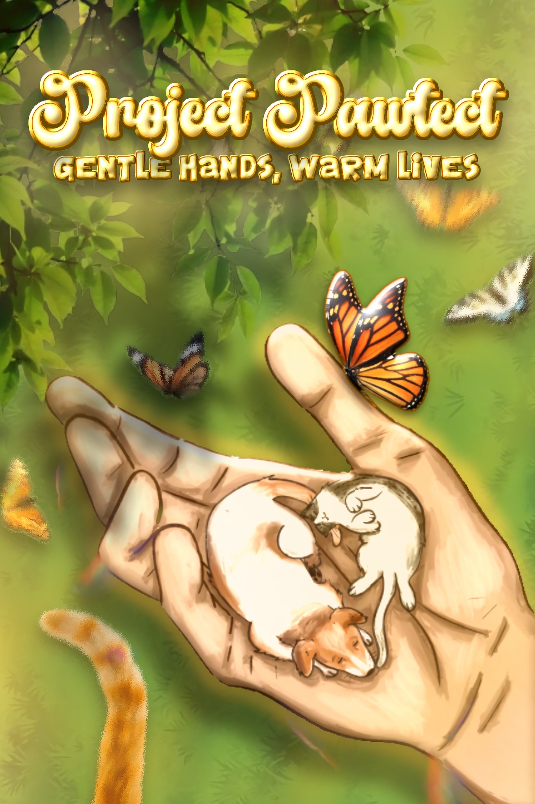
Project Pawtect: Creating Safer Communities for Humans and Stray Paws
The country faces issues with the growing number of stray animals roaming the streets. It is estimated that around 100,000 - 500,000 stray cats and dogs are added yearly. This leads to increasing animal welfare crises and public health risks. Through the project "The PAW PATROL," awareness and action are promoted. Volunteers collaborate with shelters to rescue animals, provide healthcare, build feeding stations, and promote responsible pet ownership through social media campaigns.
Learn More About the Founders
Sabina Barcarse
Sabina is passionate about animal rescue and advocacy. She coordinates donation drives and outreach programs. Her leadership ensures smooth collaboration with shelters. She believes compassion creates lasting change. Sabina inspires young volunteers to take action.
Jamyrr Calayag
Jamyrr focuses on community awareness campaigns. She designs educational materials about responsible pet ownership. Her creativity strengthens social media engagement. She actively participates in rescue missions. Jamyrr is dedicated to protecting stray animals.
Marcus Canchola
Marcus manages logistics and operations. He coordinates with international welfare organizations. His strategic planning improves project efficiency. He advocates humane population control programs. Marcus works tirelessly for sustainable solutions.
Jannella Ong
Janella leads volunteer coordination efforts. She ensures every activity runs smoothly. Her empathy drives meaningful community impact. She writes informative articles for awareness. Janella believes education empowers change.
Joannah Ramos
Joannah oversees adoption programs. She carefully matches animals with loving families. Her dedication ensures safe rehoming processes. She provides counseling for new pet owners. Joannah values responsible and compassionate care.
Renz Sy Su
Renz handles financial planning and fundraising strategies. He ensures transparency in donation allocation. His efforts sustain long-term projects. He builds partnerships with sponsors. Renz is committed to sustainable animal welfare solutions.
Rafael Tano
Rafael leads global outreach initiatives. He writes articles promoting adoption campaigns. His communication skills strengthen partnerships. He encourages youth participation in volunteering. Rafael believes every animal deserves protection and purpose.